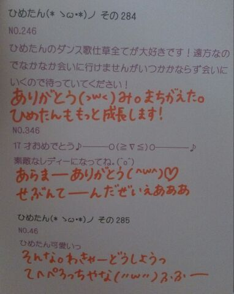

| 2013/07 11 Thu | ひめたん大図鑑56(2012年4 月) |
らすと１日！で期末終わる！
期末終わっても土曜もテストだけどね(´・ω・｀)

1158
 ひめたんのとっておきダイエット方法あったら教えて?
ひめたんのとっておきダイエット方法あったら教えて?
一時期、痩せたねーっていろんな人にほめてもらったことがあったんだけどその時はプール通ってましたかな(*^^*)
やっぱりプールは健康的なダイエット方法だと思うよ〜♪あたしも行かねばーっ!
1159
脱甘い物してるひめたんブログを読みながら饅頭を食べ、カフェオレを飲んでいます
そんなファンをどう思いますか?www
ひめたんの代わりに美味しいものを満喫して、幸せになってくれてありがとう。
...てことにしておいてください('・ω・`)
1160
ひめたんにツンデレしてもいいのかな?(笑)
いいけど、ひめたんはそんなに器用な人じゃないから
でれでれしてくれる人が好きなんだけどな??
1161
握手会のときにこんなことを話してもらえるとうれしい、とかはある?
ひめたんの好きなところを延々と熱く語る
とかゆーて。
1162
お誕生日のお手紙、大阪の握手会の時でいいかな?
待ってる(^^)!
ありがとうございます☆
1163
たこ焼きかお好み焼きどっちが好きなん?
たこは食べれないけどやきは大好きだよひめたん。
お好み焼きは広島風がいいな。え?せっかく関西いくのにって?わら
1164
個別で言ってもらいたい言葉があるんですが...リクエストしても良い...?
何ですかなんですかー
なんなりとお申し付けくださいよ＼(^O^)／
1165
次がまだひめたんに会うの大阪のミニ握以来の２回目なんだけど、ブログのコメントしてる名前言ったら覚えてくれる??
おお!2ヶ月ぶりってことですね♪
ブログの名前言ってくれたら「ああ!」ってなりますよー言っていって♪
じゃあ久しぶりにあえるの楽しみにしてるんるん(^^)
1166
手紙やプレゼントを送ろーって思ってたんだけど、どう頑張っても間に合わないーっ(>_<)
大阪の個握で渡そうかなーって(^^;)...いいですか?てか許しくださいね?
ありがとうございますっ
いつでもいいですよってかむしろ嬉しいし申し訳ないし
ありがとうございます!
1167
ひめたんの大阪の思い出はどんなのがあるかな?
ある日ぱぱとままに「ドライブ行くよー♪」って
広島から大阪までドライブしました(^O^)
で食い倒れして日帰り!
素敵でしょー???
1168
大阪の全握では日芽香ちゃんのパフォーマンスを観れるかな?
期待大∩^ω^∩
とかゆーて自分で自分のハードルをあげてみたり。
まあ間違いなく中元さんのパフォーマンスみれますよ(^^)
1169
ゴールデンウィークに広島帰るんじゃけど、最近の広島のオススメスポットorグルメはなんかありますか?
ゴールデンウィークといえばフラワーしか(o>ω<o)!
最近はひめたんも東京おるけわからんのんよね←
何だろう。
1170
ぐるぐるカーテン発売イベントお疲れさまでした!!!振り返ってみてどうですか?
ということでー
今日は大阪の総括&コメント返しで振り返りしようω!
1171
そうそう、全握の時、ひめたんちょっと辛そうだったよね?今の体調は大丈夫かな?
あー心配かけてごめんなさい('・ω・`)
あんときは暑さからか、途中不覚にもぼーっとしてしまった...
本当にごめんなさいっ
休憩中に水分糖分とってごろーんしてたから復活しましたよ♪
今はもちろん元気すぎる(o>ω<o)!
1172
大阪で美味しいものは沢山食べれたかな?
差し入れりすと!
たこ焼き、豚まん、堂島ロール、串カツ☆
全部食べたら間違いなくぶたさんになっちゃうね
1173
串カツ食べた?串カツは好き?
ケータリングで食べた♪
串カツ好きよ!大阪流のタレ二度つけ禁止!みたいな串カツ
今度食べてみたーい(^^)
1174
タコ焼きのタコは誰にあげたん?笑っ
るんるん(斎藤ちはるchan)!
ひめたんがタコだけ出してお皿の外に追いやってたら優しいるんるんが食べてくれた(*^^*)さーすが!
1175
大阪のお土産何買ったのかなー?(*・ω・*)
なんも買えんかった...。
途中京都と静岡のインターにも降りたんだけど寝ぼけててすっかりだった('・ω・`)
1176
自己紹介の時は、年甲斐になく、大声でひめたんと叫んでいたけど、届いたでしょうか?
としなんて関係なーい!
届きましたよ♪ありがとうございます(o>ω<o)
1177
大阪終わって、何か達成感があったかな?
1stシングル「ぐるぐるカーテン」も終わりかあ。
今まで頑張ってきたな。レッスンや撮影やなんやらかんやらあったけど終わっちゃうなんて寂しいな。
いろんな人に出会えたな。辛いこともあったな。
２ヶ月みんなと一緒に頑張ってこれてよかった(^^)

(＊´・ω・＊)
コメント(159)
2013/07/11 21:18